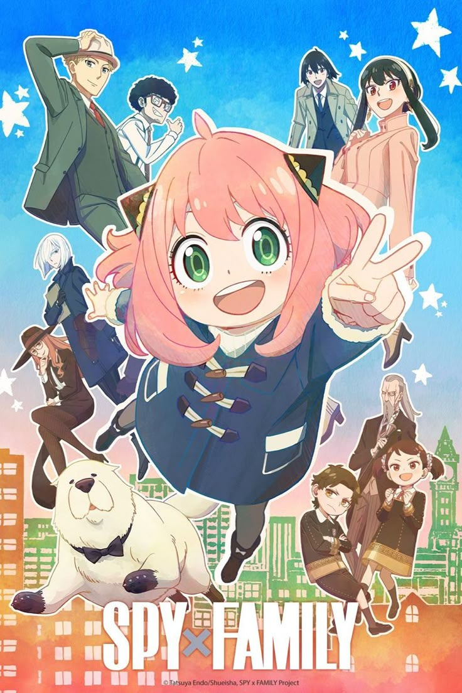

| AnimeSA | Home Top Anime Genres About |
A master spy creates a fake family for a secret mission, unaware that his adopted daughter is a telepath and his wife is an assassin.

A secret agent known as Twilight must build a fake family to complete a mission.
He adopts a young girl and marries a woman, not knowing that the girl is a telepath and the woman is a deadly assassin.
Contains mild violence and action scenes.
Spy × Family became extremely popular for: